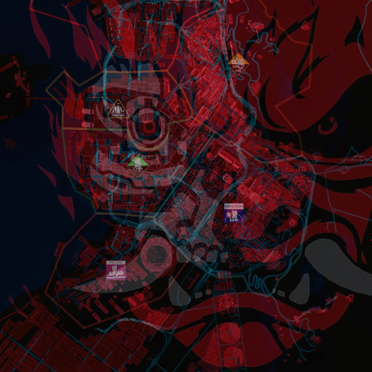
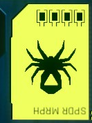
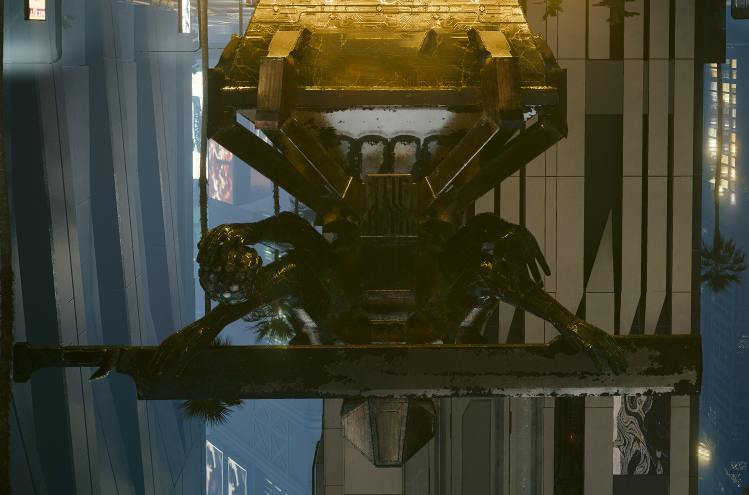

Johnny as the World

Introduction
We saw this place in a dream.
- Johnny Silverhand
This line of research examines the possibility that the entirety of Cyberpunk 2077's city takes place within the psyche of Johnny Silverhand. This would be an ultimate twist where instead of Johnny being in our brain, we are in his.
We'll borrow some colors from color theory here:
- Red & Cyan is the game/system/interface or V.
- Pink & Green is V or the player.
- Blue & Yellow is Johnny.
The Setup
In Cyberpunk Lore, Johnny Silverhand was cut in two by Adam Smasher. Spider Murphy hit him with a ranged ai-given data slug in the hopes that he could be remade whole again. This slug carry's Alt's fingerprints: a deviation of soulkiller.
Spider is known to cope with the harsh realities of the world by living it out as if it were a game. Imagine what the process of the data slug might look like in this context, and you'll have a running start to the sections that follow.
The Beginning
Love ya, Spider!
- Johnny Silverhand
The whole world loves me!
- Spider Murphy
Tell me, what has 8 legs and can inject venom into its prey? I hope you don't have arachnophobia. I've inverted these images so that you are less likely to humanize them (and because the endings teach us the pyramid is upside down, but I digress).
Spider bite
 
{kind=link}
{kind=link}
I'll borrow from color theory once again, in that we know Johnny was limited to only seeing blues and yellows until V and the interface came into his life.
The Neural Web
{kind=link}
{kind=link}
{kind=link}
Watson Lockdown
Take note of the samurai logo laid over the city map. If we combine our knowledge of V's color axis with the overlay of the samurai logo, we can draw some conclusions as to why Watson is on lockdown in the beginning and V cannot leave.
Let's start with the Arasaka logo Johnny first sees in his disconnected from V state in "Love Like Fire" and see if you notice anything missing from it:
{kind=link}
The branches are missing, indicating that V/Johnny/System have not yet merged. This also symbolizes the prison Johnny starts in, unable to navigate pathways.
Take a look at this logo:
{kind=link}
Green nature in the boxes, pink separated part of brain connected only by a single strand. That's the player's colors. "Night City" is in and of itself the center for behavioral health, made apparent by being made in red/cyan. That's the system/game/interface colors. The top left of the logo depicts a disconnected Watson - a bridge that V will eventually cross.
Lets review:
- Spider injects FF06B5 into Johnny's psyche by way of an AI enhanced data slug.
- The game/interface provides the red buildings and cyan roads by which to traverse the otherwise barren landscape (blue/Johnny) and accomplish the quests required (yellow/Johnny).
- V is the outside agent then introduced to Johnny in the hopes of making him whole again. Watson is ground zero.
- The game/interface compels V, much like an antibody, to merge with the host system and begin spreading to other areas (Watson lockdown lifted).
- The half deserted streets of cyan form the web of the spider, overlaying the blue ocean of Johnny's mind.
- Through V's actions of traveling these pathways, the neural network of Johnny's mind is reconnected. Turn on the power here. Unlock a pathway there. That's the gist.
{kind=link}
Overlaps
There exists many areas that seem to overlap each other in either design, color, time, or otherwise. Much like a dream where each scene builds off of the last. I will attempt to catalog those here.
@todo list for pics
- konpeki plaza jailbreak (random exit gate+ladder matches general theme of BROOM ladder)
- the general 6 sided shape used in logos, johnny's quest indicator, color theory axis, etc
- the BROOM room mirror matching aesthetics of Lizzie's bar changing room.
- general overlaps between elevator floors in several places - H10 megabuilding, konpeki plaza, arasaka, etc
- Mikoshi access point matches power systems for city (same array setup under tower as at power station)
- etc